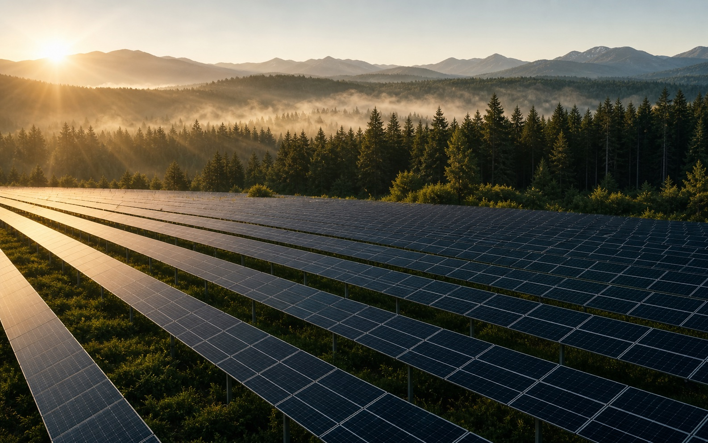
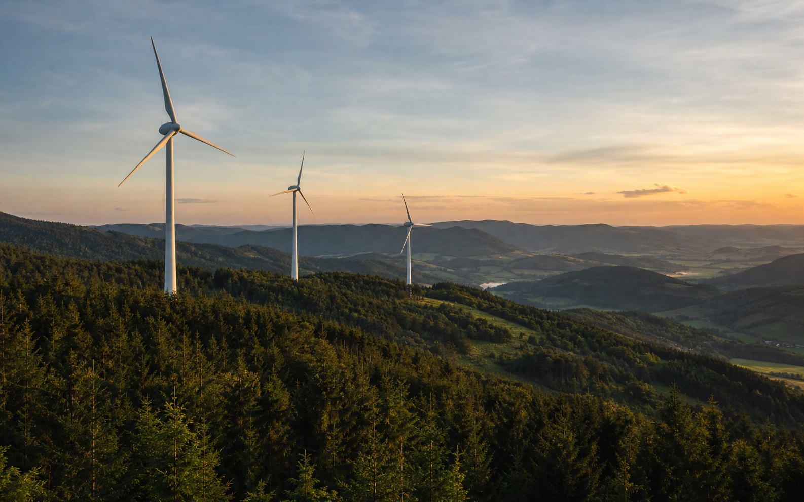
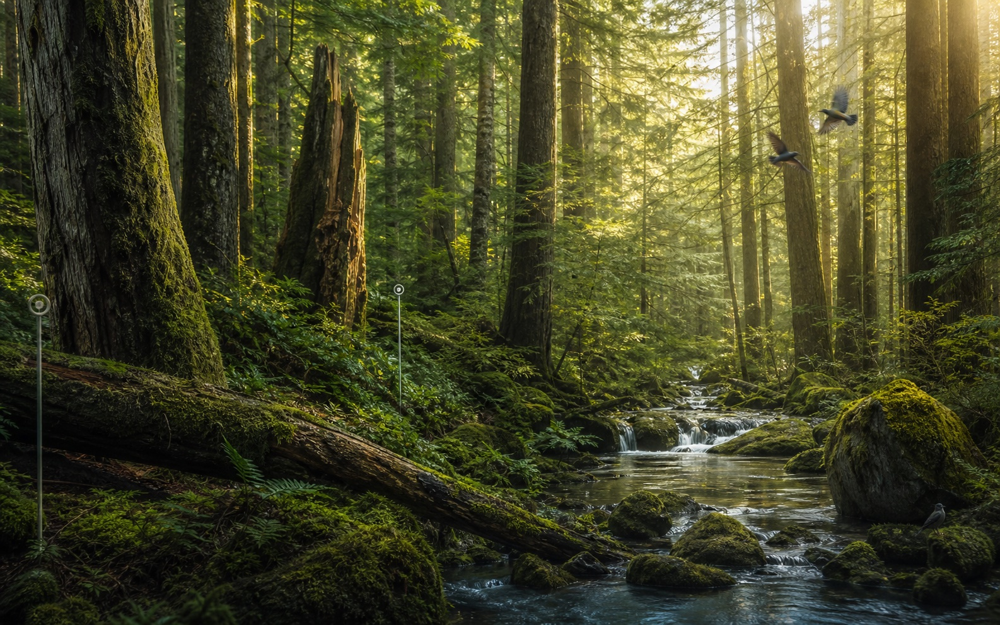
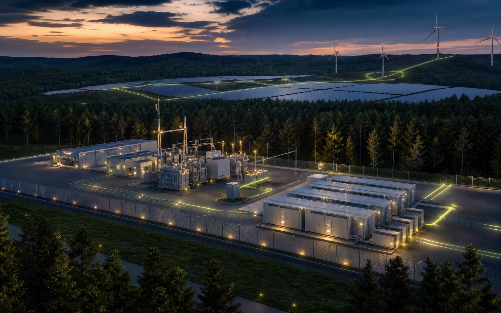
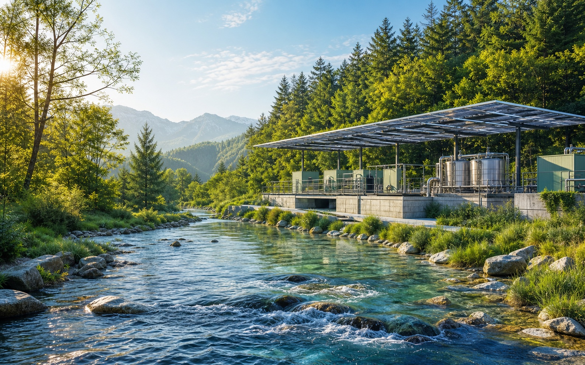
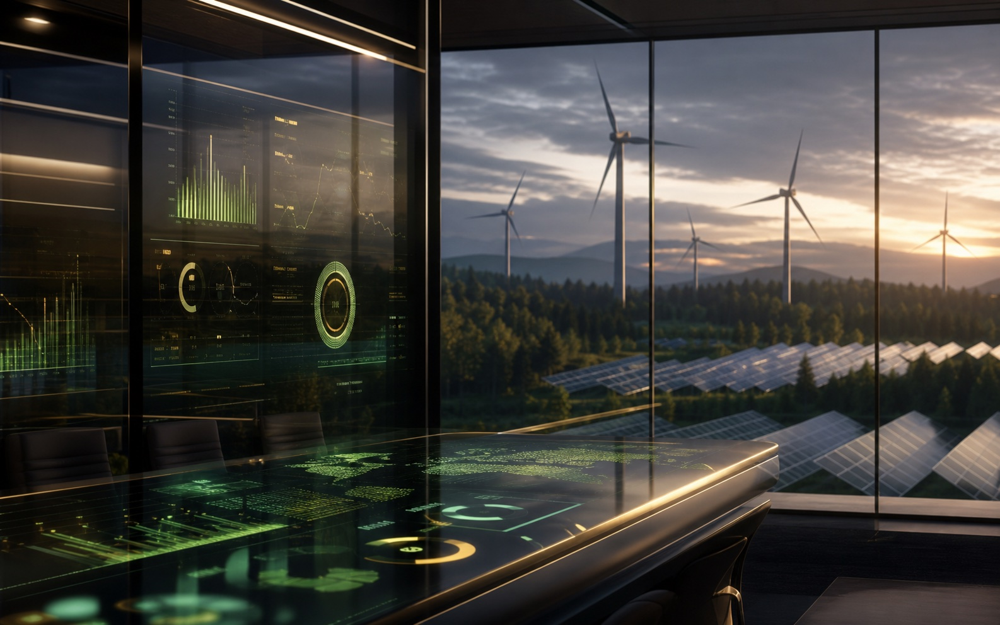

Solar Farm Development
森林周辺の公共施設へクリーンエネルギーを供給し、年間CO2排出量を大幅に削減したプロジェクトです。太陽光パネルの配置は景観と生態系へ配慮し、地域住民への環境教育にも活用されています。
42MW Capacity68K Tons CO234K Homes
GREENROOT ENERGYのプロジェクトは、発電量だけでなく、地域の景観、雇用、防災、教育、企業価値にまで広がる効果を重視しています。
架空の導入事例として、自然環境と最新技術が共存する六つの再生可能エネルギープロジェクトを紹介します。

森林周辺の公共施設へクリーンエネルギーを供給し、年間CO2排出量を大幅に削減したプロジェクトです。太陽光パネルの配置は景観と生態系へ配慮し、地域住民への環境教育にも活用されています。

北部高原の安定した風を活用し、地域産業へ再生可能電力を届ける風力発電拠点です。鳥類調査や騒音対策を重ね、自然環境との共存を前提に運用されています。

森林保全、炭素吸収、地域の生物多様性を統合して守る長期プログラムです。再生可能エネルギー導入と自然資本の保全を一体化し、環境価値の可視化にも取り組んでいます。

谷あいの複数自治体をつなぎ、太陽光、蓄電池、需要予測を統合したスマートグリッドです。電力ピークを抑え、災害時にも公共施設へ優先的に電力を供給できます。

再生可能エネルギーで稼働する水処理設備と流域保全を組み合わせ、地域の水資源を守る取り組みです。森林、河川、暮らしをつなぐインフラとして継続的な水質改善を進めています。

企業の脱炭素ロードマップ策定と再生可能エネルギー導入を包括的に支援する長期プログラムです。排出量の可視化、社員参加型施策、年次レポートまで統合しています。